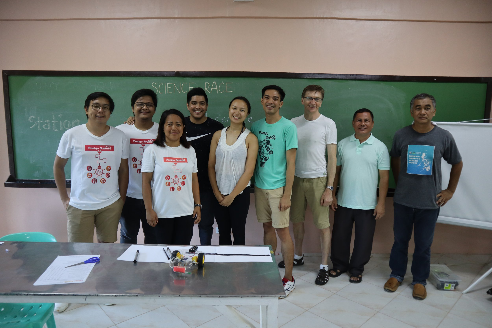
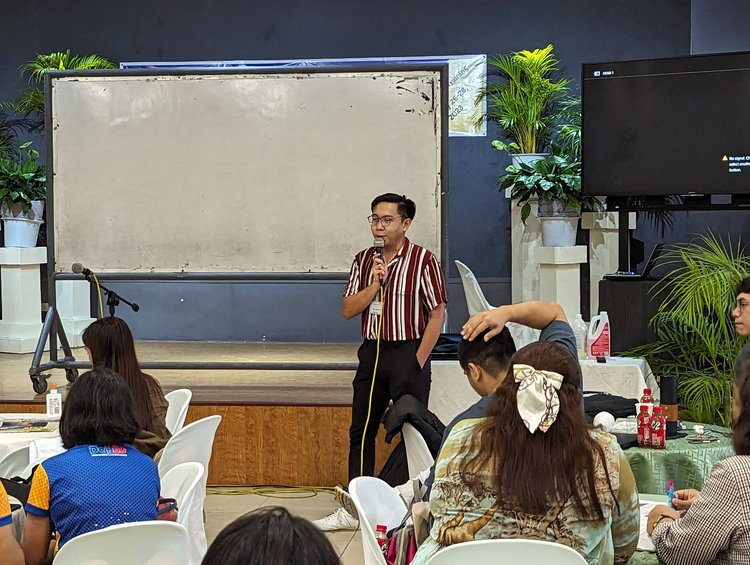
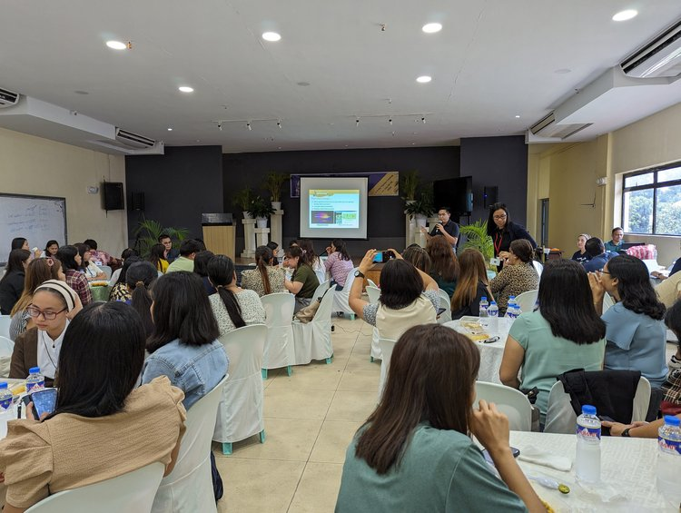
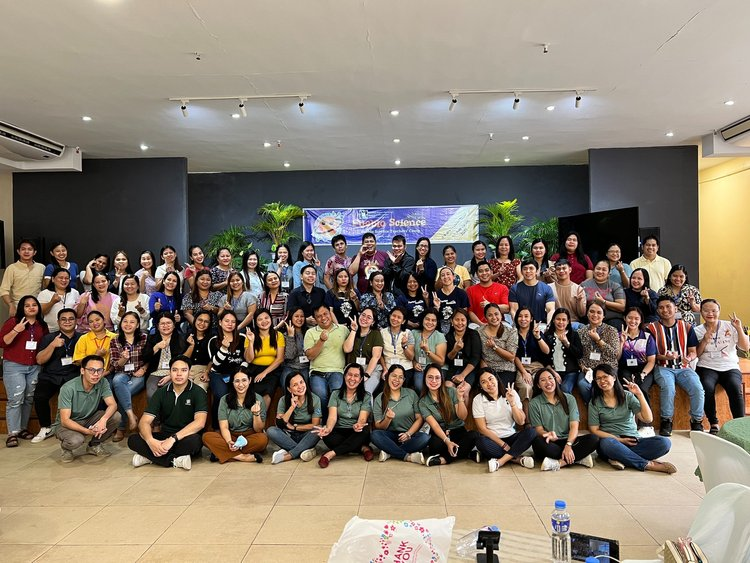
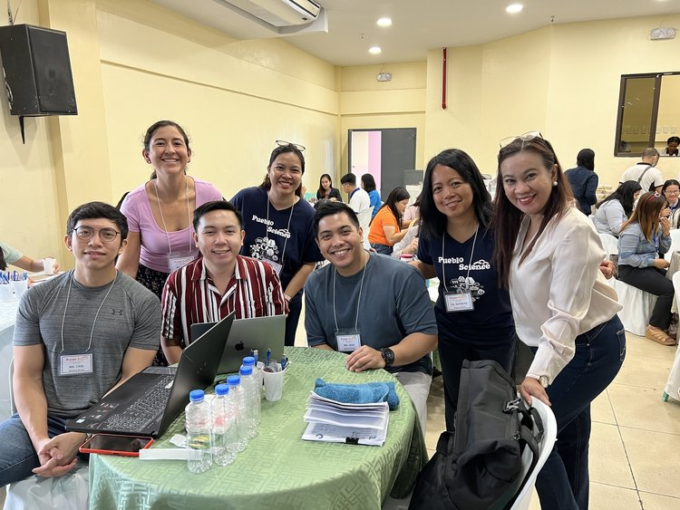

Growing up in Metro Manila, the bustling heart of the Philippines, I was fortunate enough to attend a public high school in one of the country's most advanced cities. Yet, even there, I encountered a glaring gap in our education system, particularly in the field of Science. Our Science lessons were entirely theoretical, with no practical experiments to bring the concepts to life. We had a laboratory, but it remained a distant room of untapped potential, always off-limits to us students. This experience left me pondering: if a school in the capital city faced such limitations, what could be the situation in the more remote and rural areas of the Philippines?
This realization ignited a spark within me, shaping my life's core mission: to make an impact on Science education across the Philippines. I explored various paths to fulfill this mission, from university teaching and developing educational content for print and video to being part of educational radio shows. However, it was in volunteering that I found my true calling, and this led me to Pueblo Science.
My decision to join Pueblo Science stemmed from a deep-seated commitment to elevate the quality of education in my homeland. The stark disparities in educational resources and opportunities between urban and rural areas were not just statistics for me; they were a call to action. With Pueblo Science, I found an avenue to empower educators and students in less privileged rural areas, bringing them the joys and wonders of practical Science education.
I joined Pueblo Science last 2019. I had the privilege of volunteering for their Rural Initiative for Science Education (RISE), a program that truly resonates with my mission to transform Science education in the Philippines. RISE is not just about teaching science; it's about ‘localizing’ it, making it relevant, accessible, and exciting for educators and students in rural areas.

The heart of RISE is a dynamic three-day workshop, where we, as volunteers, have the unique opportunity to guide and collaborate with local educators. Our goal is simple yet profound: demonstrate science experiments using materials readily available in their communities. These workshops aren't just a transfer of knowledge; they're a creative exchange that bridges the gap between theoretical science and practical, everyday application.
One of our core responsibilities in these workshops is the development of course modules across various disciplines—biology, chemistry, material science, physics, and engineering. This isn't a one-size-fits-all approach; each module is carefully crafted to reflect the local curriculum, addressing specific regional needs, interests, and available resources. It's a challenging yet immensely rewarding process, involving extensive research and deep understanding of each community's unique context.
Preparing for these workshops is an adventure in itself. We often arrive days in advance to scout the area. This involves everything from identifying local shops for materials, exploring the region's biodiversity for natural resources, to immersing ourselves in the local culture. This immersion helps us anchor our scientific concepts to relevant local experiences and knowledge. It's more than just preparing for a workshop; it's about connecting with the community, understanding their world, and finding ways to make science an integral, meaningful part of it.


The experience of working in these communities is beyond fulfilling. Each location unveils its own hidden paradise, adding a layer of excitement and discovery to our mission. But the real reward lies in seeing the sparkle of curiosity and understanding in the eyes of both teachers and students—a testament to the power of localized, hands-on science education.


However, the onset of the pandemic posed a significant challenge. The physical workshops, which were the cornerstone of our volunteering efforts, became impossible. However, as they say, necessity is the mother of invention. In response, our team at Pueblo Science Philippines pivoted to a digital approach, harnessing the power of online platforms to continue our mission. And that's where our TikTok adventure began.
Tasked with managing and producing bite-sized content for TikTok, I was thrust into a new world of digital creativity and engagement. Our first step was to design the page’s display picture and opening billboard. We decided on a vibrant representation of our identity and mission: the Pueblo Science logo in blue and red, echoing the colors of the Philippine flag. We added inverted-V elements atop the logo, reminiscent of nipa hut roofs, symbolizing our connection to rural communities. To complete this image, a jeepney, the iconic Filipino transport, swooshes below the logo, adding a touch of local flair.
Our TikTok journey involved uploading a variety of videos, ranging from engaging science experiments and intriguing trivia to thoughtful reflections. Carl, another volunteer and my partner in this mini-project, quickly became the face of many of these experiments. His natural charisma and flair for explaining science in fun and relatable ways brought a newfound fame (ehem!) to our little project.
But our digital transformation didn't stop there. We received an official invitation from TikTok Philippines to join their education campaign. This was a huge milestone for us. Not only did it mean wider recognition for our efforts, but it also provided us with a new funding source, as we earned money for the organization with every post we made.
To date, our TikTok page has amassed an incredible 62.7K followers and 580.3K likes! This digital shift wasn't just about adaptation; it became a new avenue to spread our passion for science education and engage with a wider audience.
As I reflect on my volunteering journey with Pueblo Science, I realize it has been a path of immense personal and professional growth. Volunteering has not only been about imparting knowledge but an enlightening journey of developing greater empathy, honing my communication skills, and gaining a deeper insight into the diverse challenges faced in education across different settings. This experience has been a testament to the transformative power of education and community involvement.
Professionally, this journey has been a catalyst for enhancing my leadership abilities. It has provided me with a platform to implement and oversee classroom-based projects, work with teams, and, most importantly, make significant decisions that impact the education of minds, young and great alike. This experience has reinforced my commitment to educational reform and has been invaluable to my professional journey.
The most rewarding aspect, however, has been witnessing the remarkable transformations in both students and teachers. Seeing students transition from passive listeners to active, curious learners is nothing short of magical. Their engagement and eagerness to learn have brought new life to classrooms. Teachers, too, have undergone a metamorphosis. The workshops and training sessions have rekindled their enthusiasm and confidence in teaching science, enabling them to become more effective and inspiring educators.
This change has had a ripple effect beyond the classroom walls. The excitement and knowledge gained by students often find their way into their homes and communities, sparking an overall interest in science and learning. It is incredible to see how tailored STEM education can not only inspire students but can also motivate entire communities to strive for greater knowledge and opportunities.
For anyone considering volunteering: be prepared to learn as much as you teach. The experience is a two-way street filled with challenges and rewards. Embrace every moment, and cherish the impact you are making. Remember, your efforts can ignite a lifelong passion for learning in someone else.
The support for our cause doesn’t have to be limited to volunteer teaching and content development. You can contribute in numerous ways—whether it’s through donations, spreading the word, or simply showing support for equitable science education. Every effort, no matter how small, contributes to the larger goal of enhancing the quality of education.
About the Author:
Mark Steven R. Santiago, RCh
Education Technology | Science Communication | Curriculum Development
Steven works full-time as the Content Academic Lead for Science at Quipper Philippines Inc., an educational technology company providing robust e-learning solutions through their own learning management system and content library.